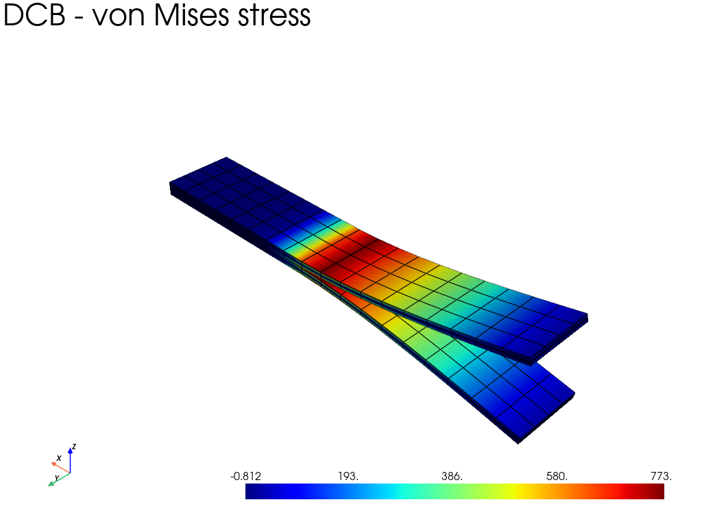

Note
Go to the end to download the full example code.
Composite double-cantilever beam with a cohesive interface
The model consists of two composite arms separated by a zero-thickness cohesive interface. Cohesive elements are inserted only after the prescribed starter-crack length. The initially unconnected part of the two arms therefore represents the pre-crack.
The arms are made from a unidirectional composite whose fibres are aligned
with the beam axis. A mixed-mode bilinear
fedoo.constitutivelaw.CohesiveLaw governs the interface, and the
opening displacement is applied incrementally with
fedoo.problem.NonLinear.
The example uses N, mm, and MPa. Its compact mesh demonstrates the cohesive-law workflow; it is not intended as a mesh-converged fracture benchmark.
from __future__ import annotations
import fedoo as fd
import numpy as np
Geometry and discretization
We first define the DCB dimensions, loading, and compact mesh resolution. The mesh is deliberately small so that the complete nonlinear example remains fast enough for the documentation gallery.
# Number of nodes along the beam length, width, and through each arm.
nx = 19
ny = 5
nz_per_arm = 3
length = 60.0
width = 10.0
arm_thickness = 1.0
crack_length = 10.0
opening = 10
fd.ModelingSpace("3D")
<fedoo.core.modelingspace.ModelingSpace object at 0x7f7308ccd2d0>
Mesh the two arms
The lower and upper meshes deliberately retain separate nodes at z=0. Coincident-but-distinct nodes are necessary because the cohesive element interpolates the displacement jump between the two interface faces.
lower = fd.mesh.box_mesh(
nx,
ny,
nz_per_arm,
x_min=0.0,
x_max=length,
y_min=0.0,
y_max=width,
z_min=-arm_thickness,
z_max=0.0,
elm_type="hex8",
)
upper = fd.mesh.box_mesh(
nx,
ny,
nz_per_arm,
x_min=0.0,
x_max=length,
y_min=0.0,
y_max=width,
z_min=0.0,
z_max=arm_thickness,
elm_type="hex8",
)
# Mesh.stack concatenates the two node lists without merging coincident nodes.
domain = fd.Mesh.stack(lower, upper, name="DCB_domain")
upper_offset = lower.n_nodes
# Define one volume mesh per arm using the common global node list. Separate
# meshes make it possible to assign distinct materials or ply orientations to
# the arms without altering the interface node numbering.
lower_volume = fd.Mesh(
domain.nodes,
lower.elements,
"hex8",
ndim=3,
)
upper_volume = fd.Mesh(
domain.nodes,
upper.elements + upper_offset,
"hex8",
ndim=3,
)
Construct the cohesive interface
For hex8 elements, nodes 4:8 form the upper face and nodes 0:4 form the lower face. Pair the top face of the lower arm with the bottom face of the upper arm. A quad4interface element therefore contains eight nodes:
[four nodes on the lower arm, four nodes on the upper arm]
n_interface_cells = (nx - 1) * (ny - 1)
lower_interface_faces = lower.elements[-n_interface_cells:, 4:8]
upper_interface_faces = upper.elements[:n_interface_cells, 0:4] + upper_offset
interface_elements = np.hstack((lower_interface_faces, upper_interface_faces))
# Do not insert cohesive elements over the starter-crack region. The two arms
# are consequently disconnected for x < crack_length and bonded by cohesive
# elements for x >= crack_length.
interface_centers_x = domain.nodes[interface_elements].mean(axis=1)[:, 0]
interface_elements = interface_elements[interface_centers_x >= crack_length - 1.0e-12]
interface = fd.Mesh(
domain.nodes,
interface_elements,
"quad4interface",
ndim=3,
name="DCB_cohesive_interface",
)
Constitutive laws and assemblies
Both unidirectional composite arms have fibres along the beam axis (X). Separate objects are retained so either arm can easily be changed later.
lower_material = fd.constitutivelaw.CompositeUD(
Vf=0.6,
E_f=250000.0,
E_m=3500.0,
nu_f=0.33,
nu_m=0.3,
angle=0.0,
)
upper_material = fd.constitutivelaw.CompositeUD(
Vf=0.6,
E_f=250000.0,
E_m=3500.0,
nu_f=0.33,
nu_m=0.3,
angle=0.0,
)
# Bilinear mixed-mode cohesive law. Axis 2 is the local interface-normal
# direction; the quad4interface element supplies the corresponding local frame.
cohesive_law = fd.constitutivelaw.CohesiveLaw(
GIc=0.3,
SImax=60.0,
KI=1.0e4,
GIIc=1.6,
SIImax=None,
KII=1.0e4,
tangent_mode="secant",
)
lower_assembly = fd.Assembly.create(
fd.weakform.StressEquilibrium(lower_material),
lower_volume,
)
upper_assembly = fd.Assembly.create(
fd.weakform.StressEquilibrium(upper_material),
upper_volume,
)
cohesive_assembly = fd.Assembly.create(
fd.weakform.InterfaceForce(cohesive_law),
interface,
)
# Keep a separate sum of the two volume assemblies for post-processing. It
# contains only standard hex8 meshes and can therefore be converted directly
# to a PyVista ``MultiMesh``. The cohesive assembly is then added only to the
# global mechanical assembly.
volume_assembly = lower_assembly + upper_assembly
assembly = volume_assembly + cohesive_assembly
Problem and boundary conditions
Material softening makes the problem nonlinear even though large-deformation kinematics are disabled.
problem = fd.problem.NonLinear(assembly, nlgeom=False)
# Load the end faces at x=0. The lower end is fully fixed; the upper end is
# prevented from moving in X and Y and receives the prescribed opening in Z.
lower_left = np.nonzero(
np.isclose(domain.nodes[:, 0], 0.0)
& (domain.nodes[:, 2] < -arm_thickness + 1.0e-12)
)[0]
upper_left = np.nonzero(
np.isclose(domain.nodes[:, 0], 0.0) & (domain.nodes[:, 2] > arm_thickness - 1.0e-12)
)[0]
problem.bc.add("Dirichlet", lower_left, "Disp", 0.0)
problem.bc.add("Dirichlet", upper_left, "DispX", 0.0)
problem.bc.add("Dirichlet", upper_left, "DispY", 0.0)
problem.bc.add("Dirichlet", upper_left, "DispZ", opening)
Dirichlet boundary condition:
var = 'DispZ'
n_nodes = 5
value = 10
Incremental nonlinear solution
The imposed opening is scaled by the problem time from zero to its final value. Adaptive increments help the Newton solver cross the damage events. Convergence may be slow for this kind of problem. During damage propagation, the residual may temporarily increase over several iterations before convergence, so the early-divergence check is disabled.
problem.set_nr_criterion(check_early_divergence=False)
problem.nlsolve(
dt=0.05,
tmax=1.0,
update_dt=True,
dt_min=1.0e-5,
tol_nr=5.0e-3,
print_info=0,
)
Cohesive-zone response
Damage and relative displacement are stored at the interface Gauss points. A damage value of one denotes a fully failed cohesive point.
damage = np.asarray(cohesive_assembly.sv["DamageVariable"])
relative_disp = np.asarray(cohesive_assembly.sv["RelativeDisp"])
print("\nDCB cohesive-zone summary")
print("-------------------------")
print(f"n_nodes: {domain.n_nodes}")
print("n_volume_elements: " f"{lower_volume.n_elements + upper_volume.n_elements}")
print(f"n_cohesive_elements: {interface.n_elements}")
print(f"max_damage: {damage.max()}")
print(f"damaged_gauss_points: {np.count_nonzero(damage > 0.0)}")
print("failed_gauss_points: " f"{np.count_nonzero(damage >= 1.0 - 1.0e-10)}")
print(f"max_opening: {relative_disp[2].max()}")
DCB cohesive-zone summary
-------------------------
n_nodes: 570
n_volume_elements: 288
n_cohesive_elements: 60
max_damage: 1.0
damaged_gauss_points: 112
failed_gauss_points: 112
max_opening: 5.589760930506991
Plot the deformed DCB
Request results from the volume sum explicitly. Calling
problem.get_results(…) without an assembly would select the summed
assembly, which also contains the eight-node quad4interface elements.
These elements are valid for the mechanical calculation but have no direct
VTK/PyVista cell equivalent.
results = problem.get_results(volume_assembly, ["Stress", "Strain", "Disp"])
# The AssemblySum result is a single MultiMesh dataset containing both arms.
# Element fields are retained independently on each submesh, whereas a
# recovered nodal stress field would be treated as one shared global field and
# would keep only the first arm's recovery. Displacement remains a shared nodal
# field and is used to display the final deformed geometry.
plotter = results.plot(
"Stress",
component="vm",
data_type="Node",
show_edges=True,
show=False,
title="DCB - von Mises stress",
scalar_bar_args={"interactive": False},
)
# Use an isometric camera from the negative-X side. This reverses the visual
# direction of the beam axis without changing the mesh, crack position, or
# boundary conditions.
plotter.view_vector((-1, 1, 1), viewup=(0, 0, 1))
plotter.reset_camera()
plotter.show()

Total running time of the script: (0 minutes 2.241 seconds)